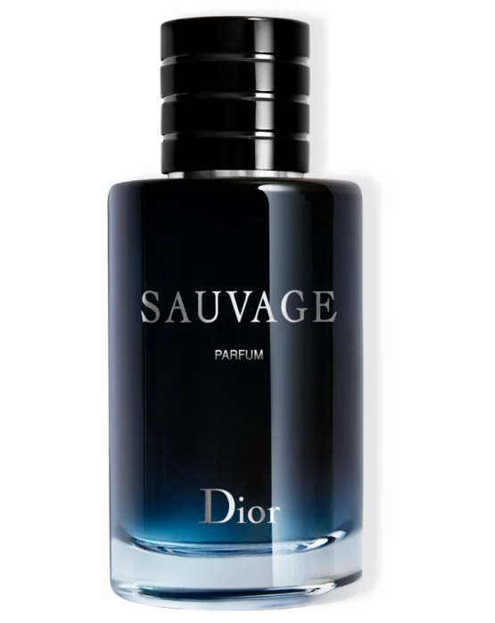
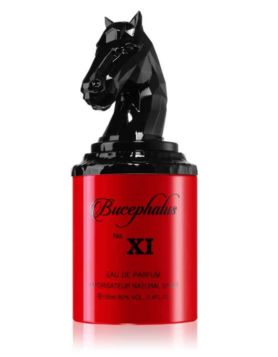
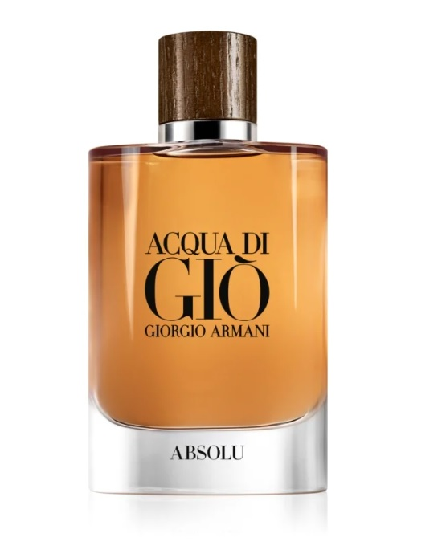

| Kép | Név | Leírás | Szín | Dátum |
|---|---|---|---|---|
|  | DIOR Sauvage |
A Sauvage újraértelmezése összehasonlíthatatlanul intenzív - az extrém frissesség meleg keleti árnyalatokkal kombinálva erősen koncentrált illatot hoz létre, amely tökéletesen kibontja vad szépségét a bőrön. | 2023 | |
|  | Armaf Bucephalus XI |
Tisztelgés a nemesség előtt! Egyedi akárcsak flakonja az Armaf Bucephalus XI Eau de Parfum uraknak. A frissesség és kifinomultság csodálatos megnyilvánulása, érzéki, pézsmás változatban amely garantáltan leveszi lábairól. | 2019 | |
|  | Armani Acqua di Giò Absolu |
Az Armani Acqua di Giò Absolu férfi Eau de Parfum a klasszikus Acqua di Giò újraértelmezése. Az eredeti változattal ellentétben lenyűgöző fás és finom vizes tónusok jellemzik. | 2018 |